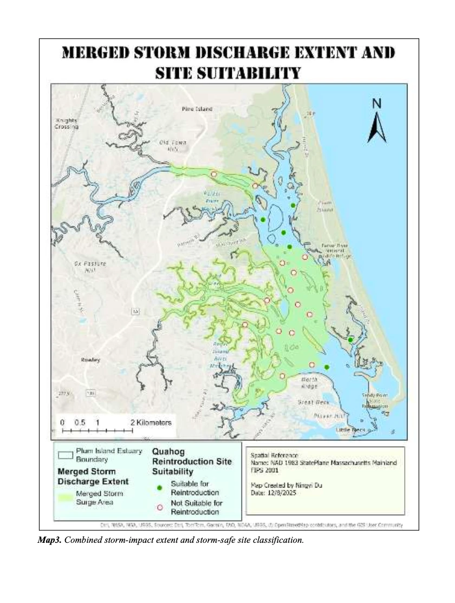
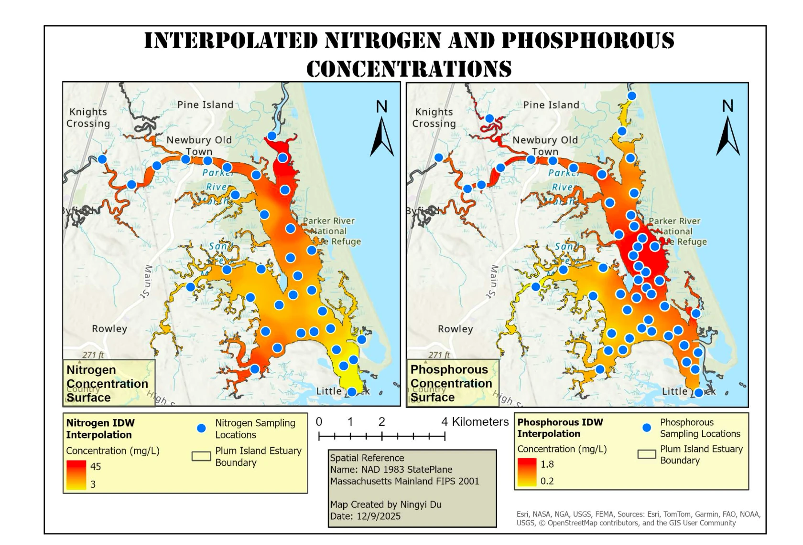

Reintroduction of the Razorback Quahog
Plum Island Shellfish Cooperative (PISCO), GIS Site Suitability Analysis, Fall 2025
A multi-criteria GIS site-selection study for PISCO, using the same layered risk-screening logic as an environmental impact assessment, applied here to a species reintroduction decision.
- The razorback quahog population in the Plum Island Estuary collapsed due to disease in 2002 and has not recovered; PISCO is evaluating 20 candidate sites for reintroduction.
- Assessed each site in ArcGIS against three ecological criteria: salt-marsh coverage (buffer and intersect analysis, minimum 5 hectares), stormwater discharge risk (Cost Distance analysis using 1997 Nor'easter peak-flow data from three river gauges), and eutrophication risk from nutrient loading (N:P ratio via IDW interpolation, high risk between 13 and 18); also measured distance to nearby LTER monitoring stations.
- 14 of 20 sites met the salt-marsh requirement, only 6 met the storm requirement, and 12 met the nutrient requirement; combining all three criteria narrowed the field to Sites 9, 15, 18 and 20.
- Based on ecological suitability and monitoring accessibility, the study recommends prioritizing Sites 9, 18 and 20 for initial reintroduction trials, with Site 15 as a secondary option.

Combined storm-risk extent and final site suitability across the Plum Island Estuary

Interpolated nitrogen and phosphorus concentrations used for the eutrophication-risk criterion
Read Full Report